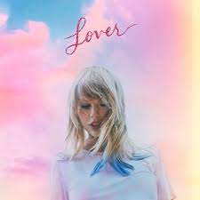
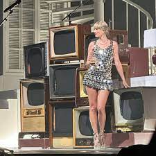

Taylor Swift to direct her first movie

Listen: Spotify Playlist of Tay's songs about Jake

Let's discuss meaning for every song from Lover
Taylor Swift propels vinyl sales
Taylor Swift’s legions of fans have helped propel the amount spent on vinyl records above CDs for the first time since the 1980s when stars including Rick Astley, T’Pau and Pet Shop Boys topped the charts.
More here
Taylor Swift Performs “Anti-Hero” for the First Time at the 1975’s London Concert
Taylor Swift-themed breakup bar in Chicago
Taylor Swift fans and despondent singles alike will be able to visit a Swift-themed “breakup bar” this Valentine’s Day in Chicago.
The time-limited pop-up venue is named “Bad Blood” in homage to Swift’s song from her 2014 album 1989. Events organization BucketListers announced the pop-up on its Instagram Friday.
The “breakup bar” will be open from January 27 to February 26, according to the BucketListers website.
More here
Which Taylor Swift song defines you?